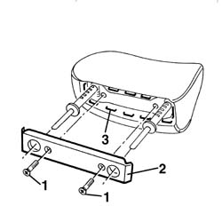
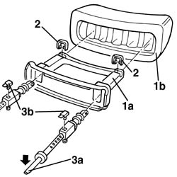

7045B08 front head restraint pins - r r
- Path
- Procedures > 70 FITTINGS > 7045 FRONT SEATS > 7045B front seat head restraint/arm rest > 7045B08 front head restraint pins - r r
- Kind
- repair procedure (removal / refitting; the operation number is the code)
- Applies to
- all engines; all production periods
- Interactive page
- https://sloeber94.github.io/elrnDB-a156/en/#/3238893
Applies to: all engines; all production periods
 Removing
Removing
 Refitting
Refitting7045B10 l/h or r/h front seat head restraint - r+r
1. Unscrew the screws.
2. Remove the collar badge.
3. Remove the metal points.

Applies to: all engines; all production periods
1. Remove the chassis (1a) from the padding (1b).
2. Remove the rod.
3. Force the outer end of the pin (3a) a little downwards and remove it from the cog (3b).
If necessary, remove the cog.

Applies to: all engines; all production periods
Refitting
RemovingMake sure that the pins are not damaged.
If removed, install the cog.
Install the pin so as to hook it with the cog.
Install the cog.
Install the chassis in the padding.
Attach the metal points.
Reinstall the collar badge.
Screw the screws.